3. Mol e constante de Avogadro
Considere duas perguntas relacionadas entre si: quantos átomos há em 27 g de alumínio? E quantas moléculas há em 44 g de dióxido de carbono?
Como a massa atômica do alumínio (Al) é 27 u, podemos montar a proporção:
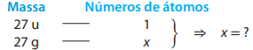
No entanto, há um problema: usamos unidades de medida diferentes na coluna da esquerda. Vamos, então, converter 27 u para grama, usando a relação 6,0 · 1023 u = 1 g e dividindo os dois membros dessa igualdade por 6,0 · 1023 :
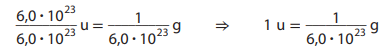
Substituindo esse valor de u em 27 u, obtemos:
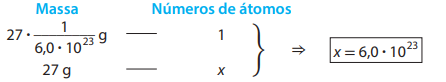
Agora, vamos responder ao segundo questionamento. A massa molecular do dióxido de carbono (CO2) é 44 u, e, com ela, podemos montar a proporção:
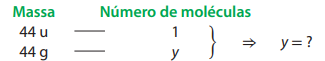
Substituindo u em função de grama em 44 u, temos:
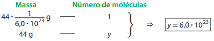
Percebeu uma regularidade? A massa atômica do Al é 27 u, e deduzimos que em uma amostra de 27 g existem 6,0 · 1023 átomos. A massa molecular do CO2 é 44 u, e concluímos que em 44 g dessa substância há 6,0 · 1023 moléculas.
A quantidade 6,0 · 1023 (ou, expressa com maior precisão, 6,022140858 · 1023) é denominada 1 mol.
Vamos avaliar outros exemplos:
- A massa de um único átomo de ferro (Fe) é 55,8 u e, portanto, a massa de 6,0 × 1023 átomos de ferro, ou 1 mol de átomos de ferro, é 55,8 g.
- A massa de uma única molécula de metano (CH4) é 16 u e, então, a massa de 6,0 × 1023 moléculas de metano, ou 1 mol de moléculas de metano, é 16 g.
- A massa de um único íon sódio (Na+) é 23 u e, consequentemente, a massa de 6,0 × 1023 íons sódio, ou 1 mol de íons sódio, é 23 g.
Conforme comentamos no item 1, o valor 6,0 × 1023 provém da relação entre duas unidades de massa, o grama e a unidade de massa atômica unificada. Expresso com maior precisão, o valor é 6,022140858 × 1023 e está incorporado em uma constante científica de grande relevância:
Constante de Avogadro = 6,022140858 × 1023 mol−1
Nos cálculos realizados no Ensino Médio, essa constante costuma ser expressa até a primeira casa depois da vírgula (isto é, com dois algarismos significativos), da seguinte maneira:
6,0 × 1023 mol−1
4. Massa molar e quantidade de matéria
Analisando os exemplos dados no item anterior, podemos perceber que a massa de 1 mol depende daquilo a que essa quantidade se refere.
A massa de 1 mol é chamada massa molar e é expressa na unidade g/mol, ou g · mol−1. Utilizamos essa grandeza nos seguintes contextos relevantes:
- Elemento químico: a massa molar refere-se a 1 mol de átomos desse elemento químico. Assim, a massa molar do elemento químico nitrogênio é 14 g/mol e a do elemento químico neônio é 20,2 g/mol.
- Substância simples metálica: a massa molar refere-se a 1 mol de átomos do elemento químico metálico que constitui a substância. Por exemplo, a do alumínio é 27 g/mol e a do ouro é 197 g/mol.
- Substância molecular: a massa molar refere-se a 1 mol de moléculas da substância. Então, a massa molar da água (H2O) é 18 g/mol, a do etanol (C2H6O) é 46 g/mol e a da sacarose (C12H22O11) é 342 g/mol.
- Íon: a massa molar refere-se a 1 mol desse íon. Podemos citar como exemplos a massa molar do Na+, que é 23 g/mol, e a do Cl−, que é 35,5 g/mol.
- Substância iônica: a massa molar refere-se a 1 mol de fórmulas unitárias dessa substância, entendendo-se por “fórmula unitária” o conjunto de íons que figura na fórmula usada para representar a substância. Assim, por exemplo, a massa molar do cloreto de sódio (NaCl) é 58,5 g/mol e a do fluoreto de cálcio (CaF2) é 78,1 g/mol.
Conhecendo a massa molar, podemos descobrir quantos mols existem em certa massa de determinada espécie química. Considere, por exemplo, duas amostras, ambas de massa 414 g, dos líquidos incolores água e etanol (substâncias moleculares). Embora tenham a mesma massa, essas amostras não têm a mesma quantidade de mols, pois a massa molar da água (18 g/mol) e a do etanol (46 g/mol) são diferentes.
Expressar a grandeza quantidade de matéria é expressar quantos mols há em determinada amostra de interesse. Vamos calcular a quantidade de matéria de água e de etanol nas amostras mencionadas.
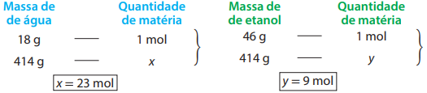
Esses resultados revelam que na amostra de água há 23 × 6,0 × 1023 moléculas e na de etanol há 9 × 6,0 × 1023 moléculas. A amostra de água, portanto, contém maior quantidade de matéria, em mols de moléculas.
Como você percebe, podemos determinar a quantidade em mols por raciocínio de proporcionalidade. Para fazer esse cálculo, podemos usar também a seguinte expressão matemática:
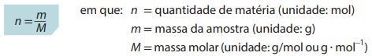
Vamos aplicar essa expressão para calcular a quantidade de matéria nas amostras de água e de etanol:
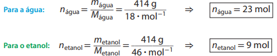
Exercícios
17.Qual é a massa de 6,0 × 1023 átomos de bismuto (Bi)? (Lembre-se de que a tabela periódica é um instrumento de consulta.)
- 50 g
- 83 g
- 115 g
- 122 g
- 209 g
18.Qual é a massa de 6,0 × 1023 átomos de zinco (Zn)?
- 30,0 g
- 50,0 g
- 63,5 g
- 65,4 g
- 119,0 g
19.Qual é a massa de 6,0 × 1023 moléculas de etano (C2H6)?
- 30 g
- 28 g
- 18 g
- 12 g
- 10 g
20.Qual é a massa de 6,0 × 1023 moléculas de dióxido de enxofre (SO2)?
- 80 g
- 64 g
- 48 g
- 32 g
- 16 g
21.Qual é a massa de 6,0 × 1023 íons brometo (Br−)?
- 79,9 g
- 78,9 g
- 36,0 g
- 35,0 g
- 34,0 g
22.A massa de 6,0 × 1023 íons amônio (NH4+) é igual à de 6,0 × 1023:
- íons nitrato (NO3−).
- moléculas de gás nitrogênio (N2).
- íons cálcio (Ca2+).
- moléculas de metano (CH4).
- moléculas de água (H2O).
23.A massa de 6,0 × 1023 íons fosfato (PO43−) é menor que a de 6,0 × 1023 íons:
- sulfito (SO32−).
- clorato (ClO3−).
- iodato (IO3−).
- nitrito (NO2−).
- carbonato (CO32−).
Comentário sobre as atividades 24 a 32: essas atividades abordam situações que envolvem proporcionalidade entre massa e quantidade de átomos ou moléculas.
24.Quantos átomos de alumínio existem em uma panela que contém 810 g desse metal?
25.Expresse o resultado da atividade anterior em palavras (mil, milhão, bilhão, trilhão, quadrilhão etc.).
26.Um anel de “ouro 18 quilates” tem massa total de 2,627 g, sendo que, desse total, 1,970 g é ouro, 0,635 g é cobre e o restante é prata. Determine, nessa joia, qual é:
- a massa de prata;
- o número de átomos de ouro;
- o número de átomos de cobre.
27.Imagine que um copo contenha 252 g de água e esse conteúdo seja bebido por uma pessoa em 7 goles.
- Qual a massa de água ingerida, em média, em cada gole, isto é, admitindo-se que todos os goles sejam “iguais”?
- Quantas moléculas são engolidas em um único gole?
28.O silício é utilizado na elaboração de componentes eletrônicos. Calcule quantos átomos há em um cristal de 56 mg de silício.
29.Além do silício, o germânio é outro elemento empregado em eletrônica. Para serem usados em determinados componentes, cristais de germânio devem conter, para cada bilhão (109) de átomos de germânio, um átomo de outro elemento químico propositalmente adicionado (chamado dopante). Faça uma estimativa de quantos átomos dopantes há em um cristal de 73 mg de germânio.
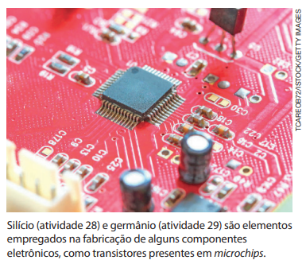
30.O acetileno, C2H2, é um gás usado como combustível em maçaricos para soldar metal. Um serralheiro comprou um botijão de acetileno, no qual há 13 kg dessa substância. Quantos mols de acetileno esse profissional comprou? Quantas moléculas de acetileno há nessa quantidade de matéria?
31.Que massa do metal prata contém o mesmo número de átomos que existe em 19,7 g de ouro?
32.Há mais moléculas dentro de um extintor de incêndio que contém 6 kg de CO2 ou de um garrafão de bebedouro que contém 5 kg de água? Explique.
33.A concentração de CO2 (g) tem aumentado regularmente na atmosfera devido a atividades humanas como o uso de combustíveis fósseis e queimadas, reforçando cada vez mais a preocupação, compartilhada por boa parte da comunidade científica, com a continuidade do aquecimento global por intensificação do efeito estufa. Em 2013, a concentração de CO2 (g) na atmosfera atingiu 0,04% em mols. Antes da Revolução Industrial, era inferior a 0,03%.
- Considerando que a massa da atmosfera terrestre é 5,1 × 1021 g e que a massa molar média do ar é 29 g/mol, determine quantos mols de ar há em nosso planeta.
- Determine quanto é 0,01% do valor calculado. Essa é uma estimativa da quantidade em mols de CO2 (g) que aumentou na atmosfera.
- Calcule a massa de CO2 que corresponde ao resultado do item b.
- Com base nos cálculos realizados, o que você pode concluir sobre a influência de atividades humanas na composição e qualidade da atmosfera? Que argumentos podem ser utilizados para educar a população a modificar hábitos e atitudes que contribuem para o aumento de CO2 na atmosfera? Como tais argumentos podem ser veiculados? Deve haver alguma imposição aos cidadãos? Justifique suas opiniões.
34. (Unicamp-SP)Dois frascos idênticos estão esquematizados a seguir. Um deles contém uma certa massa de água (H2O) e o outro, a mesma massa de álcool (CH3CH2OH).
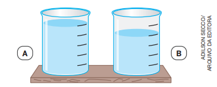
Dado: usando-se uma bolinha de densidade adequada, fez-se o seguinte experimento:
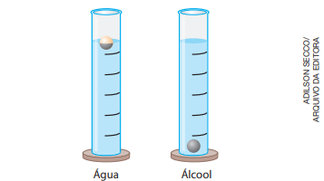
- Qual das substâncias está no frasco A e qual está no frasco B? Justifique.
- Considerando a massa das substâncias contidas nos frascos A e B, qual contém maior quantidade de átomos? Explique.
35.Os dez elementos químicos presentes em maior massa na crosta terrestre estão listados no quadro a seguir.
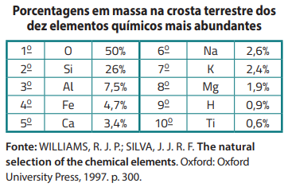
A ordem se modifica um pouco quando se considera a abundância em número de átomos, não em massa. Ordene esses dez elementos em ordem decrescente de número de átomos e apresente o raciocínio empregado para realizar essa ordenação.
36.O conceito de mol, de grande relevância se aplicado a átomos, moléculas e íons, não é útil para objetos macroscópicos, pois, por menores que eles sejam, suas quantidades presentes em nossa vida não chegam perto de 1 mol. Para ilustrar isso, considere a produção mundial de arroz sem casca em 2022, que foi de 517 Mt (Mt = megatonelada).
- Considerando que a massa média de um grão de arroz seja 20 mg, quantos mols de grãos desse cereal foram produzidos naquele ano?
- Se a produtividade fosse constante, quantos anos levaria para produzir 1 mol de grãos de arroz?
37. (Unicamp-SP)O uso mais popular do cloreto de sódio é na cozinha, onde é utilizado para acrescentar sabor a uma infinidade de alimentos e também como conservante e material de limpeza. É na indústria química, no entanto, que ele é mais consumido. São inúmeros os processos que fazem uso de produtos do processamento desse sal.
Obtém-se um sal de cozinha do tipo light substituindo-se uma parte do sal comum por cloreto de potássio. Esse produto é indicado para pessoas com problemas de pressão arterial alta. Sabendo-se que a massa molar do sódio é menor que a do potássio, pode-se afirmar que, para uma mesma massa dos dois tipos de sal, no tipo light há:
- menos íons cloreto e mais íons sódio do que no sal comum.
- mais íons cloreto e menos íons sódio do que no sal comum.
- mais íons cloreto e mais íons sódio do que no sal comum.
- menos íons cloreto e menos íons sódio do que no sal comum.
5. Porcentagem em massa de um elemento
A fórmula molecular da ureia, CH₄N₂O (Fig. 5), informa que cada molécula dessa substância é constituída de 1 átomo de carbono, 4 átomos de hidrogênio, 2 átomos de nitrogênio e 1 átomo de oxigênio, totalizando 8 átomos. Em duas moléculas de ureia, há o dobro desse número de átomos. Em três, há o triplo, e assim por diante.
Então, em 6,0 ·10²³ moléculas de ureia, há 6,0 ·10²³ átomos de carbono, 4 ·6,0 ·10²³ átomos de hidrogênio, 2 · 6,0 ·10²³ átomos de nitrogênio e 6,0 ·10²³ átomos de oxigênio, totalizando 8 ·6,0 ·10²³ átomos.
Considerando que 6,0 ·10²³ é um mol, podemos reformular essa conclusão como: em 1 mol de moléculas de ureia, há 1 mol de átomos de carbono, 4 mol de átomos de hidrogênio, 2 mol de átomos de nitrogênio e 1 mol de átomos de oxigênio. Consultando uma tabela periódica para obter as massas molares, podemos passar essa relação para massa:
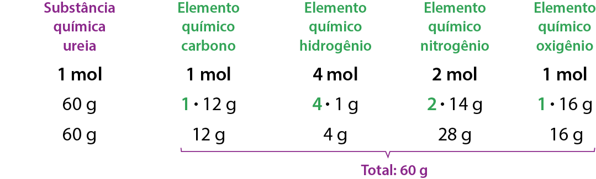
Ao conhecer as massas molares, portanto, podemos estabelecer relações entre a massa de uma amostra de substância e a massa de cada um dos elementos químicos nela presentes. Isso é importante em diversas situações práticas de Química, Agronomia, Engenharia Química e Engenharia de Materiais, por exemplo.
Imagine que o químico encarregado de formular um fertilizante pode optar entre usar ureia (CH₄N₂O) ou nitrato de amônio (NH₄NO₃) como fonte do elemento químico nitrogênio, um nutriente importante para o desenvolvimento das plantas. Pensando exclusivamente no quesito porcentagem em massa de nitrogênio (desconsiderando outros aspectos), qual das duas opções é melhor, por fornecer mais nitrogênio por massa de fertilizante empregada?
A massa molar da ureia é 60 g/mol e, pela sua composição química (CH₄N₂O), percebemos que 1 mol dessa substância contém 2 mol de nitrogênio (28 g):
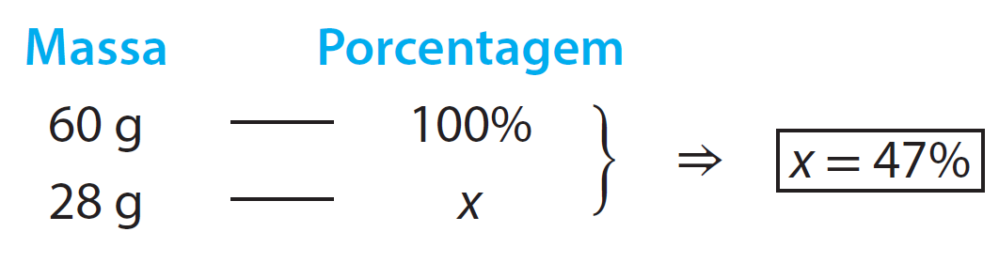
Já a massa molar do nitrato de amônio é 80 g/mol e, pela sua composição química (NH₄NO₃), concluímos que 1 mol dessa substância contém 2 mol de nitrogênio (28 g), pois há nitrogênio no cátion NH4+ e no ânion NO3-. Assim:
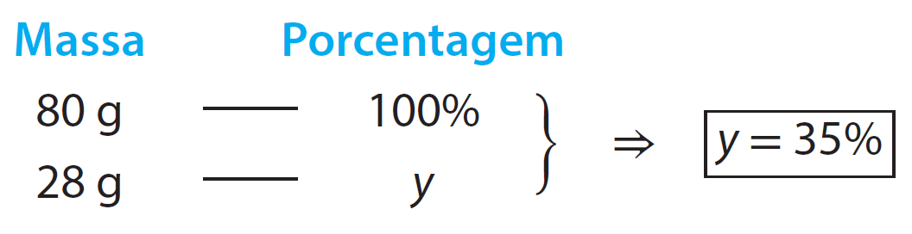
Então, no caso do nitrato de amônio, apenas 35% da massa corresponde ao elemento químico nitrogênio, enquanto no caso da ureia a porcentagem é maior, 47%. Assim, considerando apenas o quesito porcentagem de nitrogênio, o químico deve preferir a ureia na formulação do fertilizante.
O mesmo raciocínio possibilita comparar teores de um mesmo metal em diferentes minérios de composição conhecida e também avaliar, em determinados contextos, a porcentagem de pureza de uma matéria-prima de interesse do sistema produtivo.
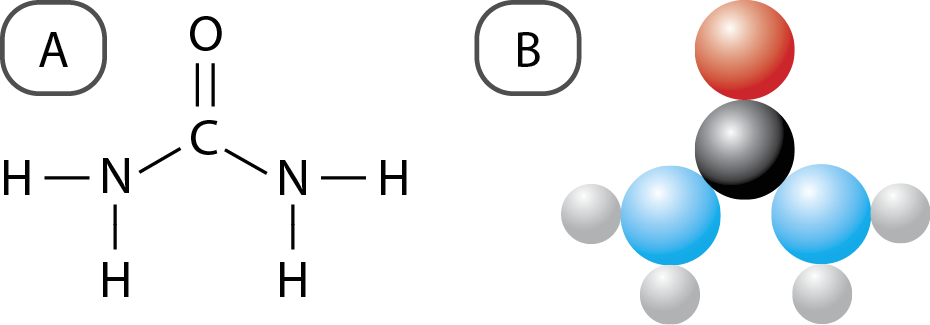
Figura 5. Fórmula estrutural (A) e modelo molecular da ureia (B), com átomos representados por esferas. (Representação fora de proporção; cores meramente ilustrativas.)
Exercícios
38. A hidrazina, combustível utilizado nos motores de ajuste de órbita de satélites artificiais, é constituída de dois elementos químicos. Em 1 mol dessa substância há 2 mol de átomos do elemento químico nitrogênio e 4 mol de átomos do elemento químico hidrogênio.
- a. Qual é a fórmula molecular da hidrazina?
- b. Determine a massa molar dessa substância.
- c. Considerando-se a massa de 1 mol de hidrazina, quantos gramas correspondem aos átomos do elemento químico nitrogênio? E aos átomos do elemento químico hidrogênio?
39. A vitamina A é constituída de três elementos químicos. Em 0,5 mol dessa substância, verificou-se a presença de 10 mol de carbono, 15 mol de hidrogênio e 0,5 mol de oxigênio. Explique como essas informações são suficientes para determinar a fórmula molecular da vitamina e determine-a.
40. Indústrias siderúrgicas obtêm aço (liga metálica de ferro com pequeno porcentual de átomos de outros elementos químicos como o carbono) a partir de minérios de ferro que contêm, por exemplo, Fe₂O₃ e Fe₃O₄. Em qual desses dois óxidos a porcentagem de ferro, em massa, é maior? Explique.
41. O magnésio pode ser obtido, por meios industriais adequados, a partir do cloreto de magnésio extraído da água do mar.
- a. Qual a porcentagem, em massa, de magnésio no cloreto de magnésio (MgCl₂)?
- b. Qual a massa de magnésio presente em 100 kg desse sal?
42. Fertilizantes devem fornecer alguns elementos químicos necessários aos vegetais, entre os quais está o nitrogênio. As seguintes substâncias nitrogenadas são empregadas como componentes de fertilizantes:
• Ureia, CH₄N₂O.
• Nitrato de amônio, NH₄NO₃.
Qual delas apresenta maior quantidade de nitrogênio por grama do composto?
43. O Brasil é o maior exportador mundial de nióbio (Nb), metal que, entre outras aplicações, torna o aço bem mais resistente quando incluído na liga metálica. Esse metal é obtido de alguns diferentes minerais, entre eles a tantalita e a columbita, que podem ser considerados combinações dos óxidos FeO, MnO, Ta₂O₅ e Nb₂O₅, em diferentes proporções. Considere que uma amostra de columbita contenha 60% em massa de Nb₂O₅.
- a. Qual é a porcentagem em massa de nióbio em uma amostra pura de Nb₂O₅? Apresente o raciocínio que conduziu à resposta.
- b. Se uma indústria processar 1 t (uma tonelada) da columbita mencionada, por meio de reações químicas adequadas para obter nióbio metálico (isto é, a substância simples nióbio, Nb), qual será a maior massa, em kg, que pode ser obtida? Explicite o raciocínio usado.
44. Uma das substâncias que dão aroma característico ao alho cortado ou esmagado é a alicina, cuja massa molar é 162 g/mol. Mostre como é possível determinar a fórmula molecular da alicina sabendo que sua composição porcentual em massa é:
44,4% C, 6,2% H, 39,5% S e 9,9% O.